快速指南
导言
通过本文可以快速指导您建立一个自己的分析以及包含此分析的驾驶舱。如果希望深入了解瑞雪分析云的所有功能，请您查阅产品手册。
注：本文默认您已经登录了系统，如果您有登录方面的问题请联系我们。
建立您的第一个分析
在本章节中将引导您一步一步的创建您的第一个分析。
创建分析文件夹
进入系统后首先点击左上角的菜单按钮呼出左侧菜单

呼出左侧菜单，点击我的分析
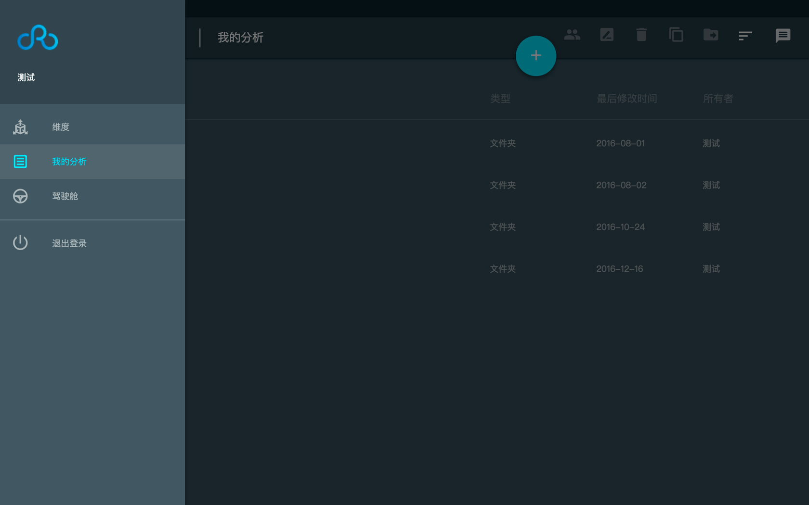
点击右上角蓝色的加号（+），在弹出的图标中选择文件夹图标

输入文件夹名称<您的名字>的分析，并点击创建。

这样您的文件夹就创建好了。

设定文件夹权限
通过以下步骤可以使开发团队群组读取此文件夹，欲了解更多关于群组的内容请参考产品手册。
勾选刚刚建立的文件夹

点击右上角的权限设定按钮

添加开发团队分组
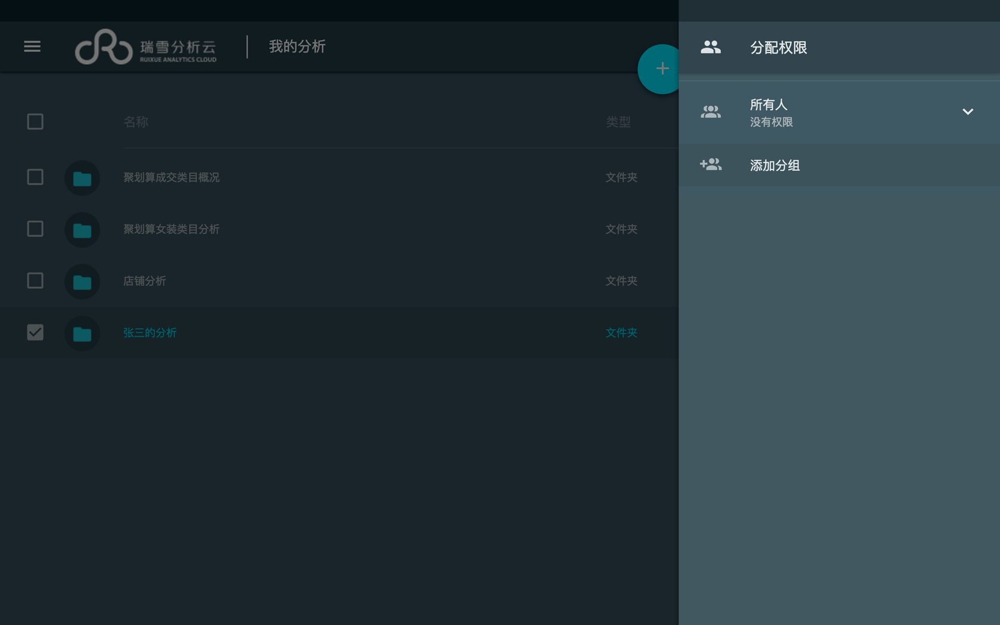
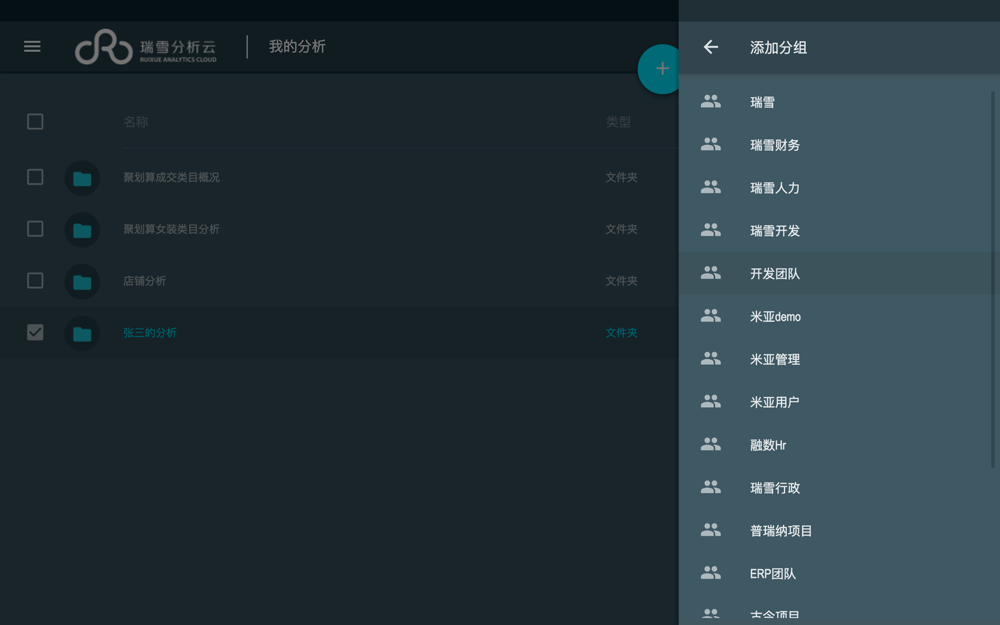
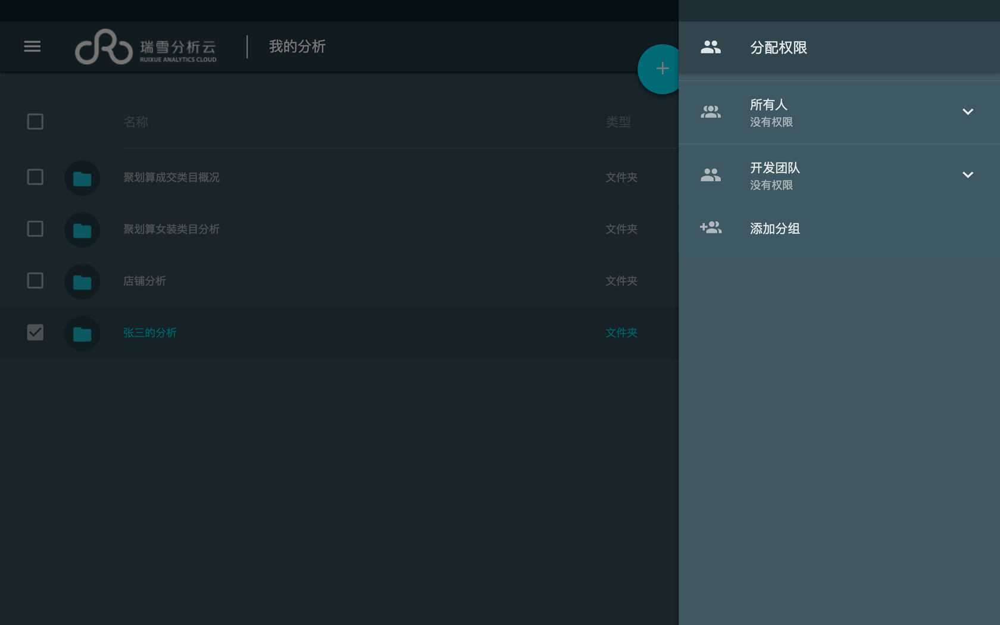
点击开发团队右侧的展开按钮，并勾选可读

点击屏幕中间收起右侧面板

在文件夹中新建分析
通过以下步骤可以在刚刚新建的文件夹中创建您的分析。
点击刚刚创建的文件夹。
注：点击文件夹名称的文字进入文件夹
确认屏幕上方的路径正确 正确示例：我的分析>张三的分析
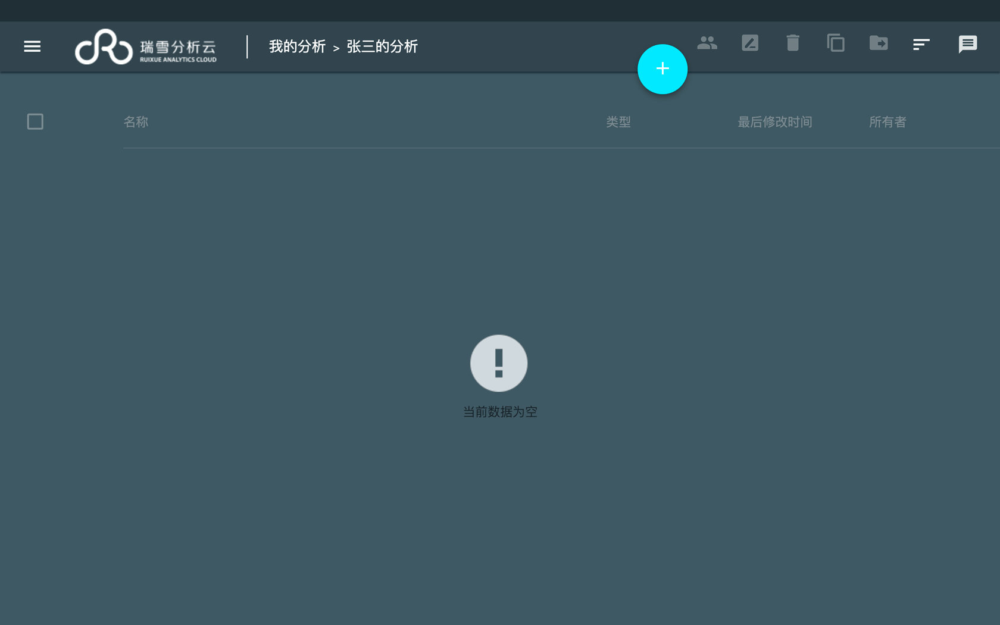
点击右上角的蓝色圆形加号并在弹出的图标中选择分析图标
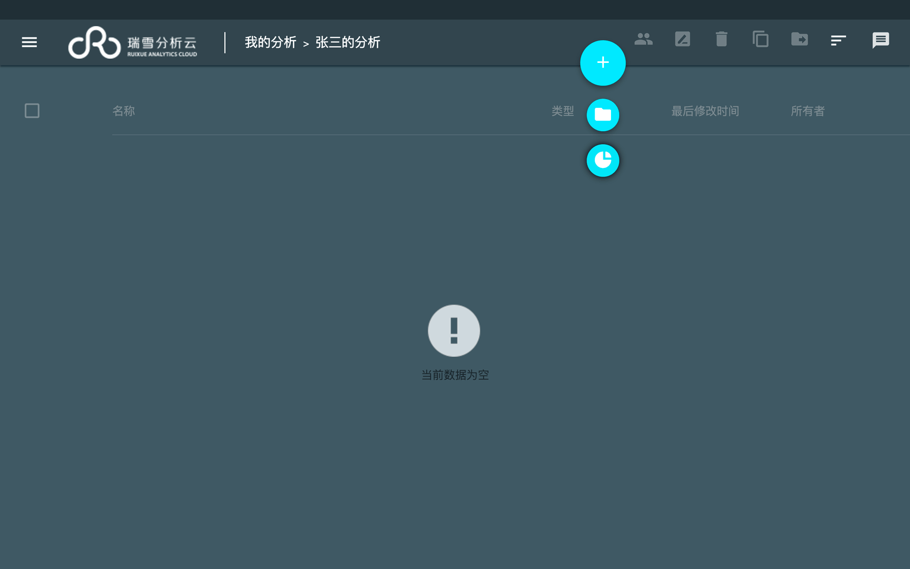
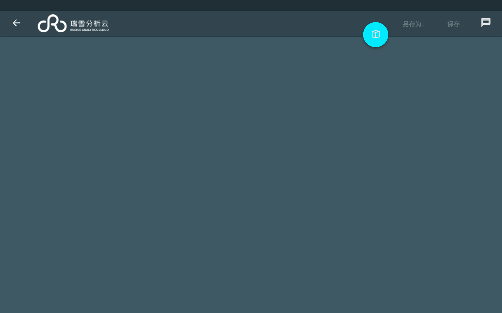
打开立方
点击右上角的蓝色圆形立方按钮

点击复合维度立方，在立方详情面板里点击使用立方按钮。

屏幕下方出现三个圆形按钮说明立方已经正确打开。
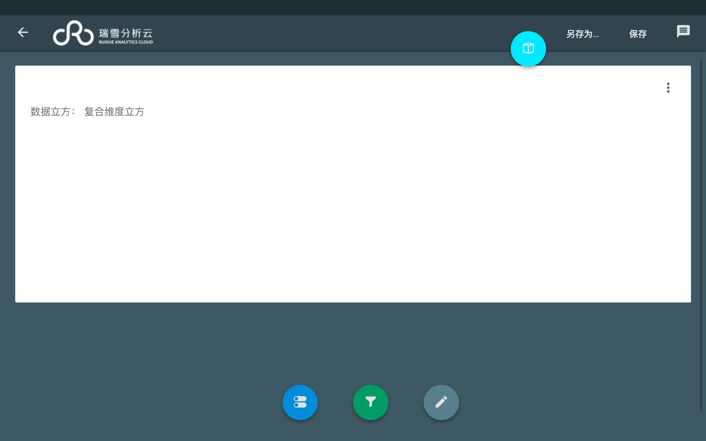
设定分析名称
您可以通过以下步骤给您的分析起一个易于理解的名字。
点击下方最右侧的铅笔形状的按钮。
在弹出的面板中输入区域销售情况汇总

选择图形类型
瑞雪分析云支持多种图形及表格形式，可以通过以下步骤设定分析的类型。
- 点击下方最右的铅笔型圆形按钮
在弹出的面板中选择柱状图

点击屏幕中心收起面板
添加维度及指标
现在您可以添加需要的维度和指标来进行分析了。
点击下方最左侧的蓝色维度/指标圆形按钮

弹出下面的面板

通过拖入sales(求和) 到已选指标中进行指标选择
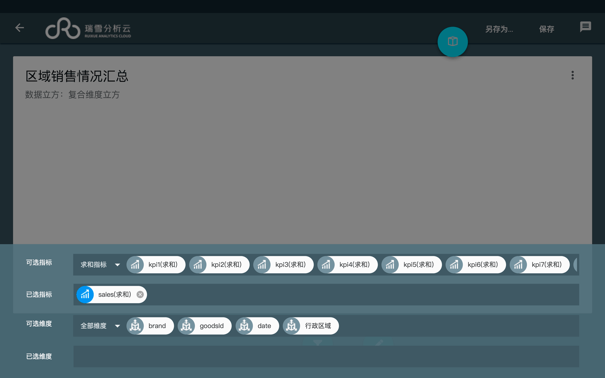
拖入行政区域维度到已选维度中，并在弹出的框中选择行政区域：省
注：行政区域是一个具有上下级关系的树形维度，欲了解更多关于树形维度的内容请参考产品手册
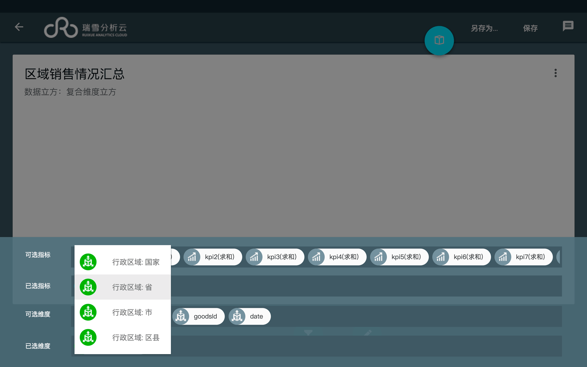
 这时您已经得到了一张全国所有省的销售总额的柱状图，现在您可以再添加一个销售平均值到图形中。
这时您已经得到了一张全国所有省的销售总额的柱状图，现在您可以再添加一个销售平均值到图形中。
点击指标菜单选择平均指标
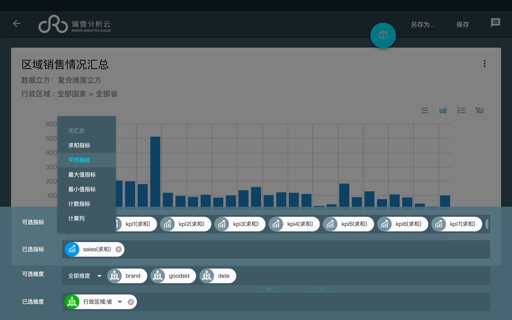
拖入sales(平均)到已选指标
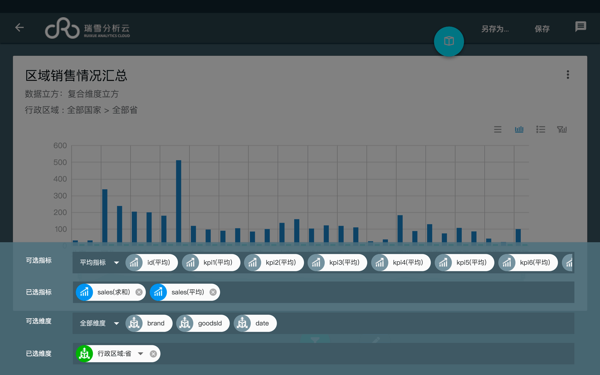
点击中心收起面板，查看您的图形。

图形的钻取
由于拖入的“行政区域”是一个树形维度，所以您可以利用分析云提供的钻取功能。使用方法如下：
点击 河北的sales（求和）柱观察河北下属所有市的销售情况。
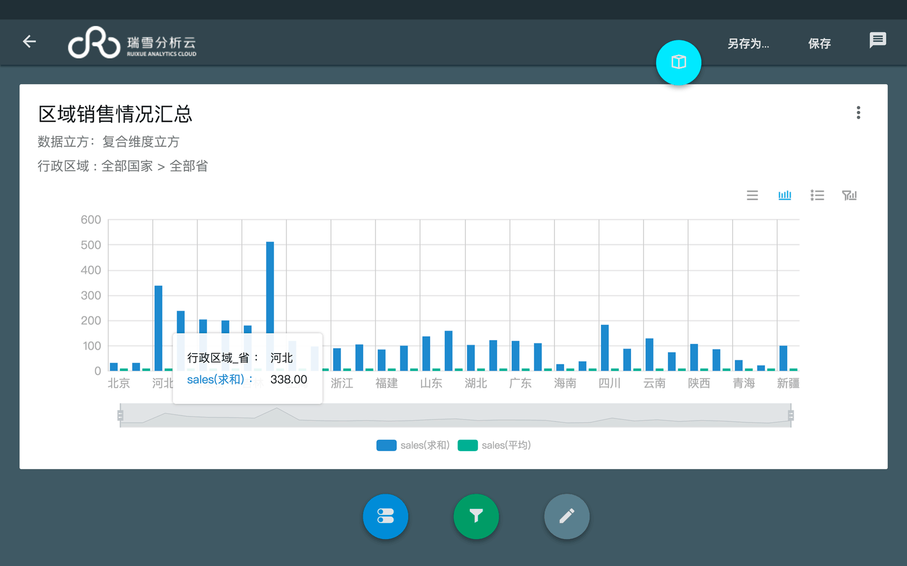

这时标题下面显示您已经钻取到中国>河北>全部市
点击“石家庄市“的柱子继续进行钻取

这时标题下面显示您钻取到了中国>河北>石家庄市>全部区县
点击标题下方的钻取路径中国>河北>石家庄市>全部区县最左侧的河北，回到省级销售情况。
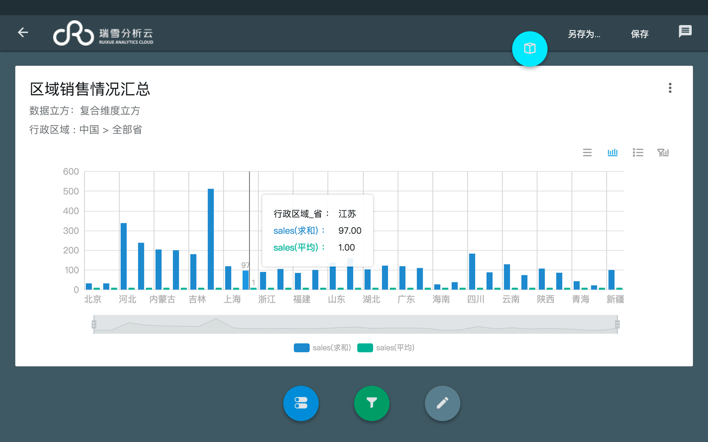
通过维度筛选数据
点击屏幕下方中间带有漏斗图标的绿色圆形按钮

在弹出的维度面板中点击date维度
选择自定义时间区间，设定开始日期为：2016-9-19，结束日期为2016-9-19

这时图形中的数据为**2016年9月19日的数据。 注：系统会筛选日期大于等于 2016年9月19日0点0分0秒 且小于等于 2016年9月19日23点59分59秒 之间的数据

通过指标筛选数据
分析云支持通过指标筛选柱状图以及通过指标筛选表格，指标筛选有两种筛选方法：
- 通过指标范围进行筛选，通过此方法系统会将符合此范围内的所有数据筛选出来
- 通过排行榜进行筛选，用户可以通过此方法筛选出最大N条数据或者最小N条数据 注：此方法的典型应用是筛选出TOP10的销售冠军
以下步骤将带领您一步一步的进行指标筛选，您可以学习到如何在不同的图形中使用这两种方式进行筛选。
通过指标筛选柱状图
点击图形右上角的指标范围筛选
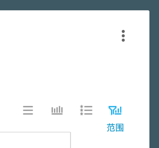
在弹出的面板中输入以下值 指标：sales(求和) 最大值：500 最小值：200
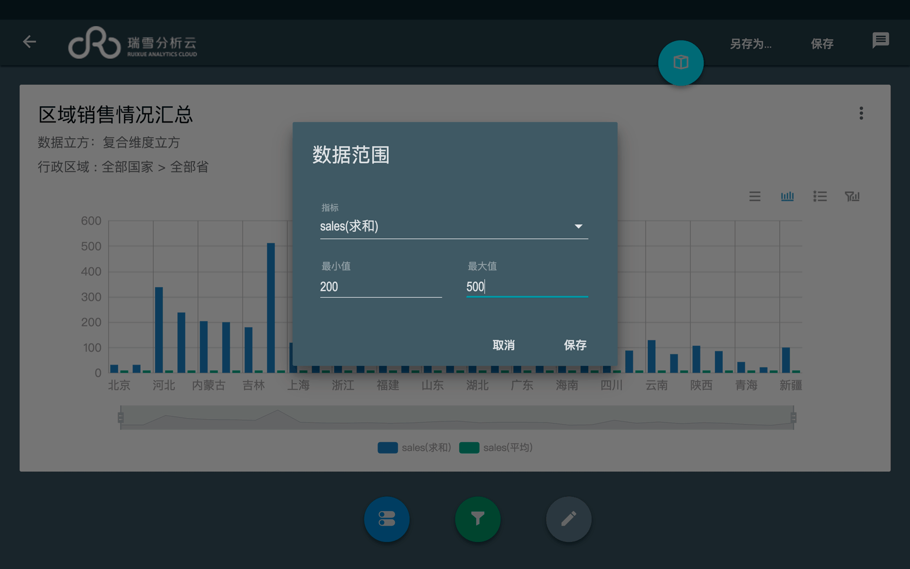
观察图形的变化
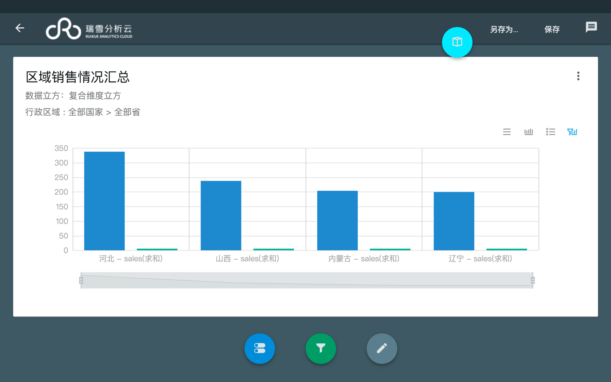
点击图形右上角的排行榜
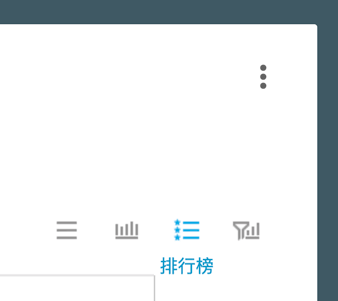
在弹出的面板中输入以下值
指标：sales(求和)
TOP 5

这时图形取消了之前做的指标范围筛选，重新在数据中选择了最大的5个值。
注：指标范围筛选和排行榜不能同时存在

通过指标筛选表格
点击下方右侧带有铅笔图标的灰色圆形按钮
在弹出的面板中选择树形表
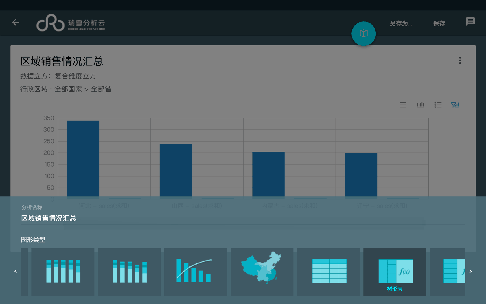
点击表头sales(求和)
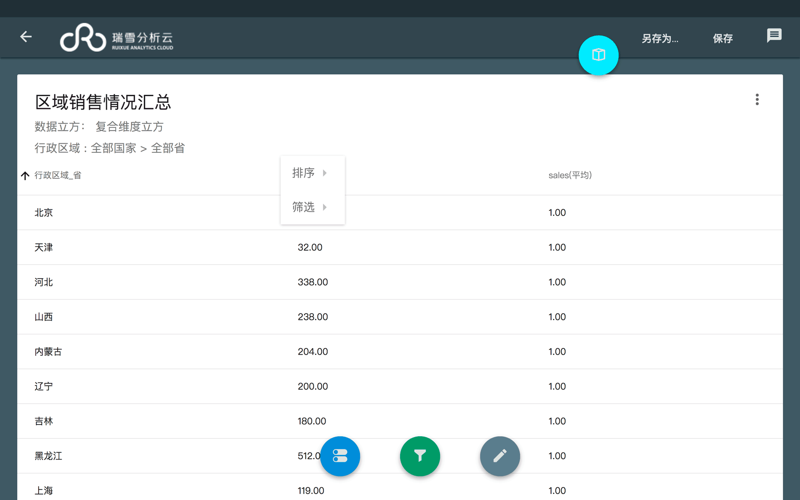
在弹出的菜单中选择筛选
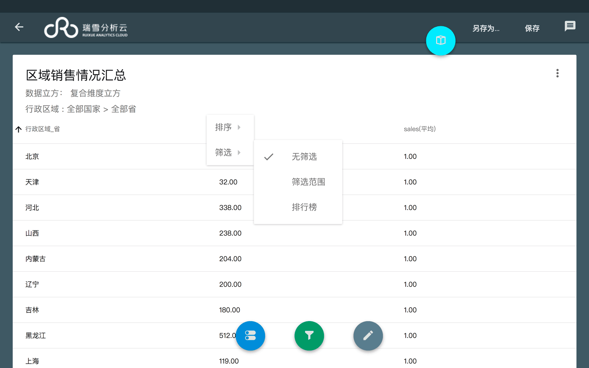
重复通过指标筛选柱状图的2-6步
显示表格汇总信息
- 点击表格右上角的三个点的图标，呼出表格菜单
- 点击显示表格汇总
- 选择
添加计算列
点击下方左侧的维度/指标蓝色圆形按钮
在指标类型的下拉菜单中选择计算列
在窗口中的标题栏输入：销售占比
在公式栏中输入：
"sales(合计)"/sum("sales(合计)")注：分析云的计算列语句参考了Excel语句，可以支持常用的Excel公式，关于语法的更多信息请参考产品手册
保存分析
点击右上角的保存按钮可以保存此分析
如果之前没有输入分析名称，这时系统会弹出窗口让您输入分析的名称
成功保存后左下角会弹出保存成功的提示
如果希望回退到分析列表可以点击左上角的后退按钮
另存分析
点击右上角的另存为...
系统会弹出窗口让您选择需要保存的路径
选定路径后点击保存，系统弹出分析名称的窗口，您可以在此修改分析名称。
至此您已经学习到了关于制作分析的基本操作流程，后面的章节将带领您制作一个含有多个分析的驾驶舱。
创建一个可互动的驾驶舱
驾驶舱是一个含有多个分析的集合，驾驶舱设计的目的是让用户可以将多个分析放在一起用以说明一个业务问题的容器。使用驾驶舱可以帮助报表阅读者更好的理解报表制作者的意图。
创建驾驶舱文件夹
进入系统后首先点击左上角的菜单按钮呼出左侧菜单
呼出左侧菜单，点击驾驶舱
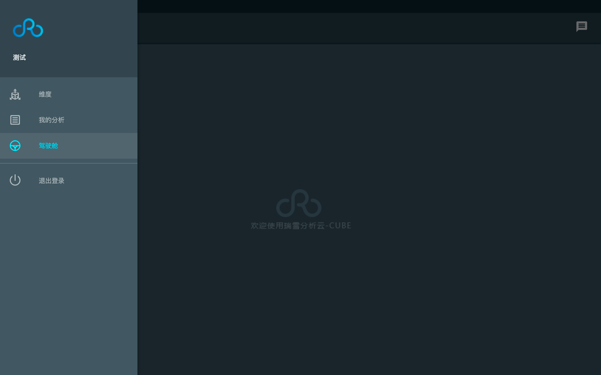
点击右上角蓝色的加号（+），在弹出的图标中选择文件夹图标

输入文件夹名称<您的名字>的驾驶舱，并点击创建。
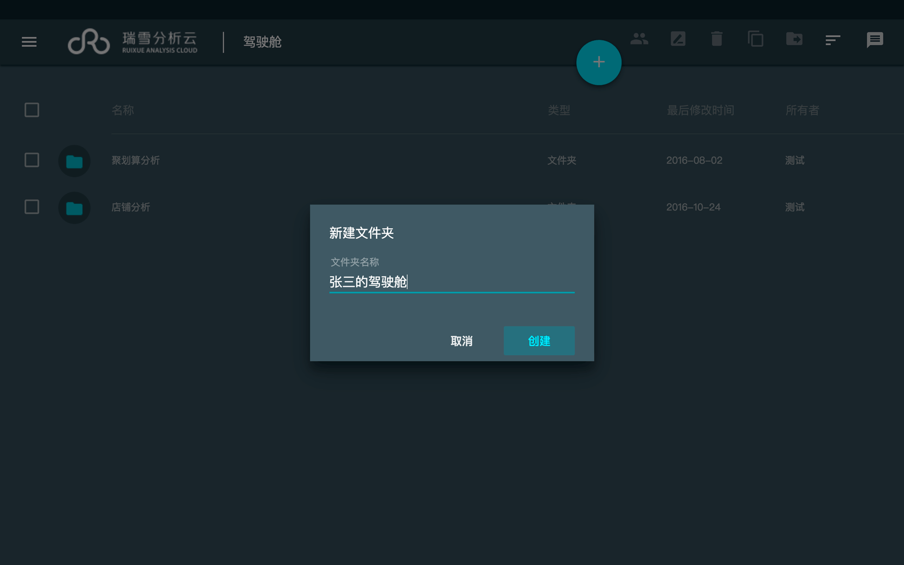
这样您的文件夹就创建好了。 注：驾驶舱文件夹和分析的文件夹是相互隔离的，没有任何关系。

创建驾驶舱
通过以下步骤可以在刚刚新建的文件夹中创建您的驾驶舱。
点击刚刚创建的文件夹。
注：点击文件夹名称的文字进入文件夹。

确认屏幕上方的路径正确 正确示例：驾驶舱>张三的驾驶舱

点击右上角的蓝色圆形加号并在弹出的图标中选择驾驶舱图标

在弹出的窗口中输入驾驶舱名称：销售报表，并点击创建。

添加富文本
点击右下角的编辑按钮（铅笔图标）进入驾驶舱的编辑模式
点击添加富文本按钮 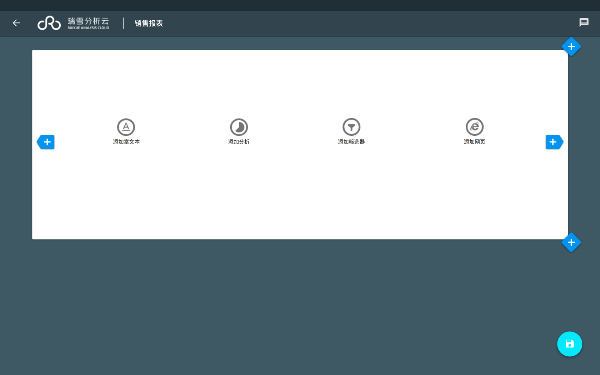
在弹出的对话框中输入：
标题：简要说明
正文：这是一个用于练习的驾驶舱。
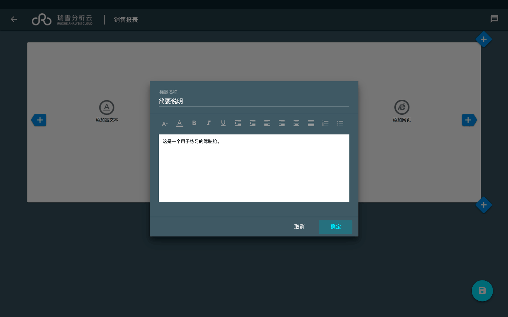
点击右下角的保存按钮（磁盘图标）保存驾驶舱
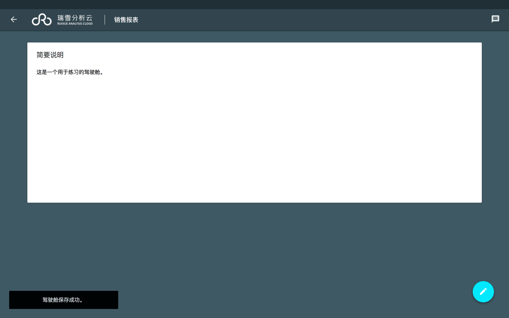
添加分析
- 点击右下角的编辑按钮（铅笔图标）进入驾驶舱的编辑模式
- 点击添加分析按钮
- 在分析列表页中选择之前创建的分析（张三的分析 > 区域销售情况汇总）
- 点击右下角的保存按钮（磁盘图标）保存驾驶舱
调整单元格大小
点击右下角的编辑按钮（铅笔图标）进入驾驶舱的编辑模式。
点击第一行单元格的右侧+号，将单元格分割成两个单元格。
注：单元格最多可以分割两次，换句话说，每行最多只能有4个单元格
点击第一行单元格右下方的加号，系统会在此单元格下方创建一个新的单元格。
拖动第一行两个单元格之间的分割线可以改变两个单元格的宽度。
拖动第一行和第二行之间的分割线可以改变第一行单元格的高度。
拖动第二行的下边可以改变第二行单元格的高度。
点击右下角的保存按钮（磁盘图标）保存驾驶舱，并确认效果。